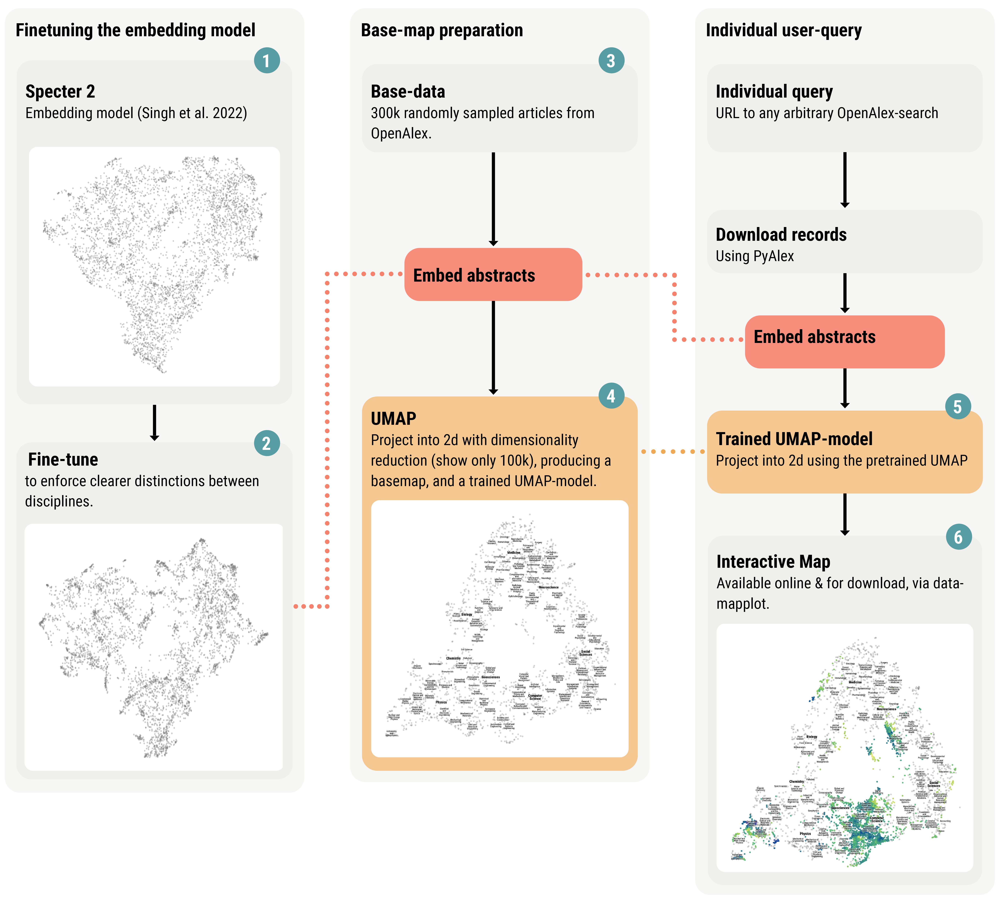

The Philosopher’s Guide to Language Modeling
Speaker Max Noichl
Institution Utrecht University
Date Bochum, 24 July 2026
Follow along on your device
Route
- Terminology
- Bag of words
- Topic models
- Word embeddings
- Transformers
- Building an atlas of the sciences.
- What drives progress in philosophy?
Terminology (Sloppy)
- Model: A mathematical structure, implemented with computer code, intended to represent something.
- Fitting / training / learning: Jiggling around the numbers in a model until it predicts well. XKCD
- Prediction: Passing data to a model and seeing what it does with it. We’re often predicting the past.
- Supervised / unsupervised / semi-supervised: In supervised learning we have labeled data that we learn to predict; in unsupervised learning we do not; in semi-supervised learning, we make up the labels on the go.
- Matrix: A grid of numbers, like an Excel table.
Why Model Language?
- Models enable computational analysis.
- Computational analysis enables large-scale investigation.
- It can sometimes increase objectivity.
- It also leads, strangely, leads to general intelligence.
Bag Of Words
- The simplest language model.
- We just count the words! BOW.
- This gives us a numerical representation of a text.
- It also throws away most of what philosophers care about.
Topic Models
Topic Models, Limits
- Topic models are the hammer of language modeling.Mallet
- They are not great for everything.
- But their failure modes are comparatively well known.
Word Vectors
- Topic models and bags-of-words are blunt.
- They do not account for semantics.
- Wittgenstein: “Die Bedeutung eines Wortes ist sein Gebrauch in der Sprache.” (PU, §43)
- So let us estimate semantics from contexts. Skip-gram
Word Vectors, Continued
- We can estimate semantics from contexts.
- And then we can do math with words.
Transformers
- Problem: meaning is context-sensitive.
- We can update the representations of a word based on its context.
- Attention is all you need!
BERTs And GPTs
- BERT and GPTs use the same basic machinery.
- BERT: bidirectional encoder representations from transformers.
- Purpose of BERT: embeddings and fast language tasks, like keyword-extraction. SOPHIS
- GPTs: decoder-only transformers.
- GPTs predict only ahead & generate text.
“Real” LLM’s
- Make the model huge, train in on everything (you can find).
- Train it on reasoning chains & problem solving.
- It is still just next-token prediction.
- Stochastic parrots?
“Real” LLMs
- Next-token prediction is surprisingly powerful.
- Sutskever’s example: how do you predict the final word of a detective novel?
- You have to figure out who the culprit is.
- That suggests the model has learned something like a world model.
- “Platonic” representations?
OA Atlas

Model Templates

Concepts

Attention of HPS

Philosophical Progress
- With Simon DeDeo (CMU, SFI).
- Two modes of philosophical reasoning:
- Rigorous: propositions, arguments, positions.
- Fluid: examples, metaphors, pictures, intuitions.
- Corpus of 23k philosophy texts.
- Parse with GPT-4o into examples and positions.
- Merge: first embed with a BERT-style model, then detect nearest neighbours, then ask GPT-4o whether these are the same. Merge
Philosophical Progress, Continued
- Positions are more dynamic, examples temporally stable. Rise and Fall
- Examples form long range connections, positions structure locally. Network analysis
- Citations: Novel example combinations increase success.
Continue with the notebook
Google Colab
Open the text-analysis workbook
Run the examples, change the code, and save your own copy.
Literature
De Bruin, Jonathan. (2022) 2023. “PyAlex.” https://github.com/J535D165/pyalex.
Humphreys, Paul. 2004. Extending Ourselves: Computational Science, Empiricism, and Scientific Method. Oxford University Press. https://books.google.com?id=ZIot7QGz7eEC.
Knuuttila, Tarja, and Andrea Loettgers. 2023. “Model Templates: Transdisciplinary Application and Entanglement.” Synthese 201 (6): 200. https://doi.org/10.1007/s11229-023-04178-3.
Malaterre, Christophe, Jean-François Chartier, and Francis Lareau. 2020. “The Recipes of Philosophy of Science: Characterizing the Semantic Structure of Corpora by Means of Topic Associative Rules.” Plos One 15 (11): e0242353.
McInnes, Leland, John Healy, and James Melville. 2018. “UMAP: Uniform Manifold Approximation and Projection for Dimension Reduction.” http://arxiv.org/abs/1802.03426.
Singh, Amanpreet, Mike D’Arcy, Arman Cohan, Doug Downey, and Sergey Feldman. 2023. “SciRepEval: A Multi-Format Benchmark for Scientific Document Representations.” November 13, 2023. http://arxiv.org/abs/2211.13308.
Weingart, Scott B. 2015. “Finding the History and Philosophy of Science.” Erkenntnis 80 (1): 201–13. https://doi.org/10.1007/s10670-014-9621-1.
Zichert, Michael, and Adrian Wüthrich. 2024. “Tracing the Development of the Virtual Particle Concept Using Semantic Change Detection.” October 22, 2024. https://doi.org/10.48550/arXiv.2410.16855.